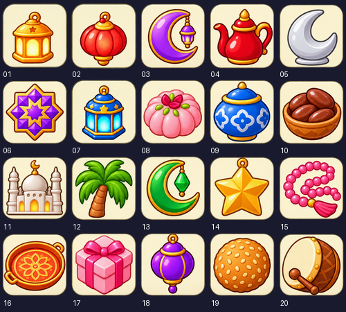
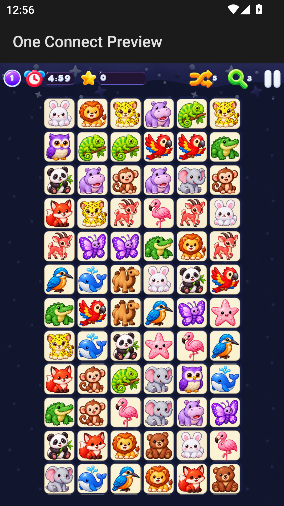
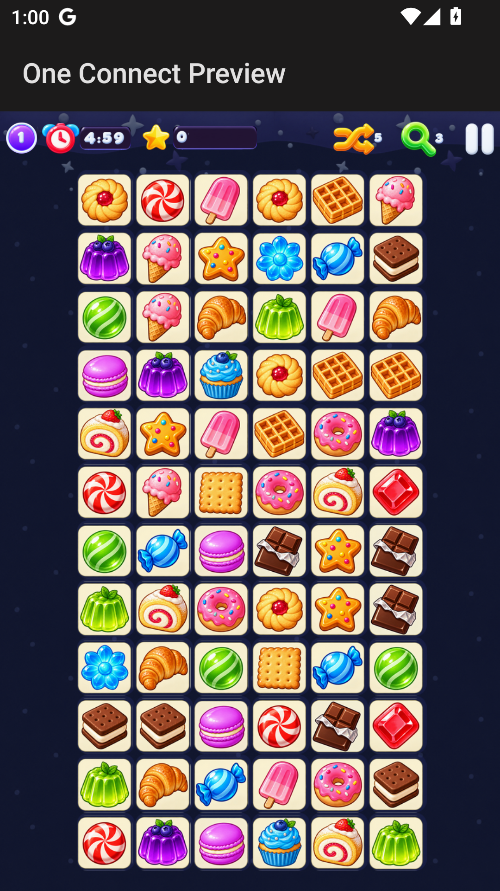
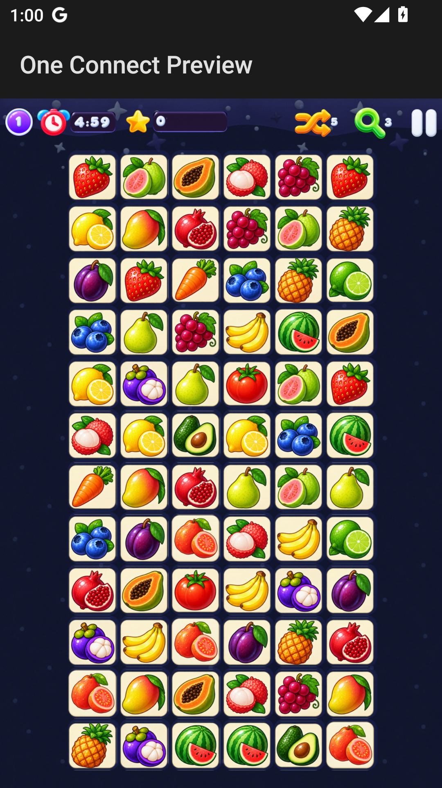

三主题逐帧对照
每格左侧是原版、右侧是当前牌面；斋月牌面在原版没有对应帧。
动物

甜点

水果

斋月备用

约 48 像素牌面单独检查
当前游戏各牌帧按 48×48 显示；编号与图集帧一一对应。可切换模拟类型，重点观察轮廓相近、颜色接近的牌。初步目视需重点复核：水果 06 / 19（均有切片与叶片），水果 02 / 10（均为半切水果），动物 01 / 14（同为坐姿猫科）。这些是待测风险，不代表实际用户一定混淆。
动物


甜点


水果


实际对局画面
开发工程随机棋盘截图，分别在浏览器和 Android WebView 运行时采集；重点检查相近颜色牌型的轮廓、提示角标与连线。
动物

甜点

水果
